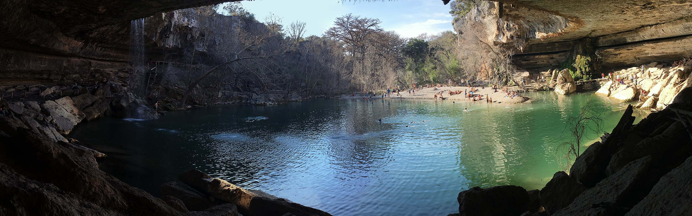

Facts about Austin
- Population: 974,447
- Year Incorporated: 1839
- Region: Central Texas
- Classification: Urban/Metro
- Average income level of the city compared to Texas: higher
- Rank: 11th

Geography
| Parks |
Natural Disasters |
Cityscape |
| Lady Bird Lake |
2011 Drought |
Skylines |
| Barton Creek Greenbelt |
2018 Flooding |
Moonlight towers |
| Swimming holes |
2023 WInter Storm |
Downtown |